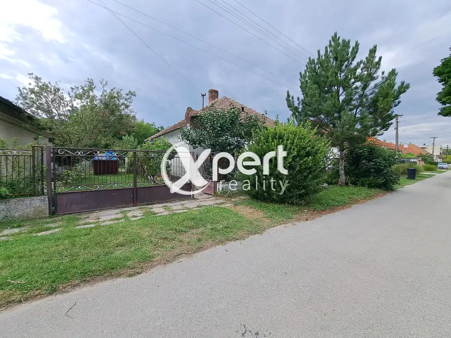
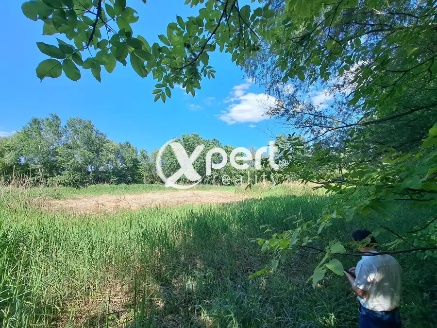
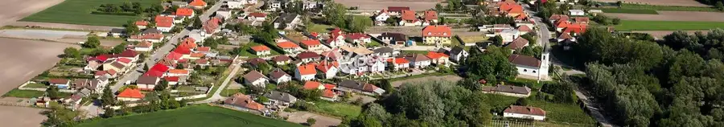

Exkluzívna novostavba, 4-izbový rodinný dom s dvoj garážou Bohelov
Boheľov
- Plocha350 m²
- StavNovostavba
- VlastníctvoOsobné
- Energetická triedaA
O nehnuteľnosti
Rodinný dom v okrese Dunajská Streda – pokoj, pohodlie.Rozhodujete sa medzi tichou lokalitou a výbornou dostupnosťou?Viac nemusíte! Tento rodinný dom je dokonalým kompromisom medzi oboma svetmi.Vytvorte si domov v pokojnej časti s výbornou dostupnosťou do okresného mesta Dunajská Streda – len 10 minút.Exkluzívna novostavba 4-izbového rodinného domu - dokončenie podľa svojich predstáv.Dom, slnečná terasa a záhrada sa rozprestierajú na pozemku s výmerou 1350 m².Úžitková plocha domu 176+77 m² na poschodí poskytuje dostatok priestoru pre veľkú rodinu, ktorú túži po pokojnom bývaní s vlastným kúskom zelene.Stavba je situovaná v zástavbe rodinných domov v tichej lokalite, kde si užijete pohodu a súkromie.Slnečná záhrada poteší všetkých, ktorí radi trávia čas vonku – či už pri káve na terase, alebo pri starostlivosti o rastliny.Dispozícia domu:Z kuchyne aj z obývačky vedie priamy výstup na slnečnú terasu, z ktorej sa otvára pohľad na záhradu – harmonické spojenie interiéru a exteriéru.Dom ponúkame predovšetkým bez nábytku. Konštrukcia budovy je celý Ytong.Francúzska strešná krytina: Imerys Edilians Plein Sud, pálená keramika. Tepelná izolácia Ytong Multipor 10 cm. 92 mm profil, 3-vrstvové drevené okná (4-16-4-16-4). Vonkajšie parapety z mramoru, vnútorné drevené parapety. Na prízemí zakrytá a otvorená terasa. Každá izba na poschodí má balkón, úplne obložený bočnými stenami. Tepelná izolácia stropu na poschodí z 40 cm kamennej vlny. Kondenzačný kotol Viessmann, ohrievač vody 300 l, regulácia teploty pre každú izbu. Viessmann solárny kolektor s ohrievaním vody TUV pokrýva celé letné obdobie od mája do októbra. Podlahové kúrenie Rehau s riadením zón, reguláciou teploty pre každú izbu, v liatej samonivelačnej anhydritovej podlahe po celej ploche! V kúpeľniach sú ďalšie sušiaky na uteráky prepojené s podlahovým vykurovaním.Energetický certifikát – dom s nízkou spotrebou energie, dokopy mesačné účty za energie (voda/kanalizácia, elektrina, plyn) 150 EUR/mesiac. Žiadne preplatenie! Dom má vynikajúcu zvukovú izoláciu. Zvuky zvonku nie sú počuť! Kvalitná kuchynská linka na mieru, keramická varná doska, keramický dvojitý drez, vstavané: rúra, mikrovlnka, chladnička, umývačka riadu, digestor. Špajza má vstavané drevené police. Alarmový systém Paradox plne funkčný. Videovrátnik nainštalovaný. Vonkajší fitness kútik pripravený na športovanie. Vonkajšia vŕtaná studňa s ponorným čerpadlom, regulovaná na stály tlak s frekvenčným meničom. Kabeláž pripravená: 4 vonkajšie kamery okolo domu, v každej miestnosti dátový kábel RJ45 v nástennej zásuvke. Pripravené: pre vykurovanie bazéna je umiestnený výmenník tepla vo vodomernom šachte a v pôde je položené tepelne izolované potrubie až k bazénu. Vonkajšia vŕtaná studňa s ponorným čerpadlom, regulovaná na stály tlak s frekvenčným meničom. Skalná záhrada a okrasné jazierko pripravené.Zakúpené vybavenie: vaňa VPC 2 m³, rúry, pumpa, gumová fólia, rôzne záhradné dekoratívne kamene, skaly na 4 paletách, betónové a PVC obrubníky. Všetko je možné si prezrieť na dvore. Vedľa drevenej prístavby s rozlohou 6 m² pri garáži je vytvorený vonkajší fitness kútik, zakúpené: vonkajší gumový koberec na cvičenie na ploche 40 m² (hrúbka 40 mm) v zelenej farbe, možné si prezrieť na terase. V garáži je možnosť pripojenia vody, príprava s ohrievačom vody, rohová vaňa, obložená dlažbou. Sofistikovaná automatická brána pred garážou a garážové dvere s diaľkovým ovládaním, dažďová voda vedená do miestneho drenážneho žľabu, predpripravená preosiata humusová pôda pri plote. Káblovanie pre 4 vonkajšie kamery okolo domu. Káblovanie vo všetkých miestnostiach s RJ45 sieťovými zásuvkami. Zostávajúce práce: vonkajšie maľovanie, úprava parku, schody na poschodie a zábradlie galérie len dočasne z dreva, vnútorné dvere, svietidlá. V spodnej kúpeľni chýba dlažba. Zakúpené: vaňa, 2 umývadlá a sprchový žľab, 2 sušiaky na uteráky. Vo všeobecnosti ide o dom postavený vo veľmi vysokej kvalite, venovali sme pozornosť detailom. Po dokončení poskytuje obyvateľom skutočné luxusné podmienky. Bol postavený vlastnými rukami.Lokalita:BoheĽov je obľúbená obec s kompletnou občianskou vybavenosťou – nájdete tu potraviny, materskú školu, kultúrne stredisko, športoviská a príjemných susedov.V obci je stabilný optický internet!Milovníci prírody ocenia možnosť prechádzok priamo od domu.Jednoducho – ideálny domov pre tých, ktorí hľadajú pokoj, pohodlie a výbornú dostupnosť.Domov si nekupujete – ten musíte zažiť. Príďte sa presvedčiť sami.Cena nehnuteľnosti: 250.000eur Cena ponúkanej nehnuteľnosti zahŕňa:- vypracovanie potrebnej zmluvnej dokumentácie a realizáciu celej transakcie- poplatok za návrh na vklad do katastra nehnuteľností- poplatky za overenie podpisov u notára- doručenie podkladov na kataster- asistenciu pri odovzdaní nehnuteľnosti a prehlásení energií a služieb- ďalšiu potrebnú asistenciu podľa dohody a potrebyRealitná kancelária - Xpert Reality Vám zabezpečí kompletný servis pri kúpe nehnuteľností. Prostredníctvom nášho hypotekárneho špecialistu Vám zabezpečíme najvýhodnejšie financovanie nehnuteľnosti. Vďaka externej spolupráci s právnou kanceláriou ako aj internému právnikovi Vám garantujeme nadštandardný právny servis. Zabezpečíme kompletný servis pri kúpe nehnuteľností.Pokiaľ Vás ponuka oslovila neváhajte ma kontaktovať na takacs@xpertreality.sk , alebo na + 421 907 419 559Teším sa na vás.
Parametre
| Druh | Rodinný dom |
|---|---|
| Dátum zverejnenia | 15. 12. 2025 |
| Dĺžka pozemku | 60 |
| Energetická náročnosť | Nízkoenergetický |
| Energetický certifikát budovy | A |
| Orientácia | Južná |
| Plocha balkónu v m2 | 5 m² |
| Plocha lodžie | 5 m² |
| Plocha pozemku | 1350 m² |
| Plocha predzáhradky | 500 m² |
| Plocha terasy v m2 | 20 m² |
| Počet balkónov | 3 |
| Počet garáží | 1 |
| Počet izieb / miestností | 4 |
| Počet lodžií | 1 |
| Počet nadzemných podlaží | 1 |
| Počet vonkajších parkovacích miest | 3 |
| Rok kolaudácie | 2015 |
| Rok poslednej rekonštrukcie | 2025 |
| Rok výstavby | 2015 |
| Stav nehnuteľnosti | Novostavba |
| Telekomunikácie | Telefón, Internet, Káblová TV, Iné |
| Terás | 1 |
| Terén pozemku | Rovinatý |
| Typ | Predaj |
| Typ konštrukcie | Tehlová |
| Vlastníctvo | Osobné |
| Vybavenie | Balkón, Lodžia, Terasa, Garáž, Verejné parkovanie, Špajza, Sklad, Technická miestnosť |
| Vykurovanie | Ústredné, Podlahové |
| Zariadenie | Čiastočne zariadené |
| Zastavaná plocha | 592 m² |
| Úžitková plocha | 350 m² |
| Šírka pozemku | 30 |
Kde to je


Mohlo by Vás zaujímať

DomNové10 47 000 €3 izb. Rodinný dom -Znížená cena! Medveďov 100 m² Ponúkam na predaj 3 izbový dom v príjemnej časti Žitného ostrova v obci Medveďov.Dom sa nachádza v centre obci na pozemku o výmere 330 + 990m2 s…
PozemokNové7 35 000 €Pozemok, lesopark, zeleň, rekreácia Ňárad 7530 m² Ponúkam vám na predaj pekný rekreačný pozemok.Spomínaný pozemok sa nachádza v katastrálnom území Ňárad, je umiestnený v tichom a príjemnom prostredí…
PozemokNové2 33 000 €Znížená cena! Záhrada v obci Baloň v Medzičilizí Baloň 2300 m² Ponúkame na predaj záhradu vo výmere 2300 m2. Pozemok je vhodný na pestovanie zeleniny, ovocie alebo na rekreáciu. Nachádza sa v zastavanej časti…